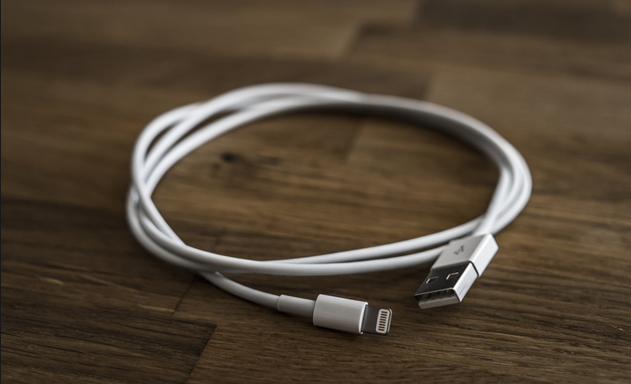

Best iPhone Cable To Buy
Published on August 17, 2023
Over the past few years, Apple has been gradually replacing its proprietary, ten-year-old lightning port with the improved, generally accepted USB Type-C interface. All recent iPhones and iPads now feature a USB-C port on the bottom for charging and syncing, and thus require a certified lightning cable of acceptable quality.
If you have an Apple phone, you need an iPhone lightning cable. A lightning cable is necessary to connect an iPhone to a wall charger, a portable power bank, or any number of other devices. A wireless charger can also be used to charge your device, but a lightning cable is a specific device that is an essential. All of the lightning cables for iPhones described in this post, however, are Apple MFi-certified, so you can be sure they will perform brilliantly with your iPhone, AirPods, or older iPad and will last for a very long time.
In a world where technology is developing at an exponential rate, some discoveries tend to take center stage while others quietly play crucial roles in our daily lives. The iPhone cable is one of connectivity's unsung heroes. This modest piece of technology has undergone its own evolution, changing from a simple charger to a flexible tool that keeps us connected, charged, and productive.

The initial iPhone came with a fairly basic charging cord when it was introduced by Apple's visionary Steve Jobs in 2007. Users could transfer data and charge their devices using the 30-pin connector cable, which served as the first connection between the iPhone and its power source. It was a solid and trustworthy friend, but as technology advanced quickly, it was clear that change was coming.
Apple replaced the 30-pin connector with the Lightning cord in 2012. This modification not only increased longevity but also signaled a turning point in the history of the iPhone. The Lightning connector's reversible design made it easier for users to use by removing the difficulty of trying to plug it in properly. In addition, this cable made it possible for quicker data transmission rates and a new wave of accessories.
Apple Lightning To USB Cable

This well regarded Apple lightning to USB cable is the first item on this list of the finest lightning cables for iPhones in India. This is an actual Apple lightning cable that can be purchased online from authorized Apple retailers for a fairly affordable price. No other lightning iPhone cables sold online can compare to the strength and usability of this genuine Apple lightning to USB cable. This Apple lighting cable, which has a length of around 1 m, is capable of quickly charging your iPhone and iPad.
Duracell USB Lightning Apple Certified Cable

This Duracell USB lightning Apple certified charging cable is the one you should definitely choose if you're hesitant to purchase accessories for your iPhone or iPad from other brands. The (Mfi) certification proves that the Duracell product is safe for your device and relates to its exceptionally high quality and durability. However, in comparison with the one mentioned before, this lightning cable is quite a bit longer. The 1.2m length of this Duracell USB lightning Apple-certified cable makes it a superb overall offering.
boAt LTG 500 Apple MFI Certified iPhone Cable

This boAt LTG 500 iPhone cable is just one example of how this brand achieves at producing some of the top electronic goods and gadget necessities. Moreover certified, this boAt charging cable assures that it is fully safe to be used with your iPhone for quick charging. The excellent wires inside of this cable had perfectly complemented the outer layer, leading to an excellent product throughout.
AmazonBasics USB A to Lightning iPhone Cable

Here is another excellent item designed and produced by AmazonBasics. However, this AmazonBasics USB A to lightning cable differs from the other cables provided above in this article because it has PVC protection on the outside, making it a much more secure and convenient choice for iPhone users who are sick of having their delicate Apple lightning cables torn and broken frequently. Also, this AmazonBasics lightning cable's blue color looks really great from all angles.
AmazonBasics 6-foot Lightning Cable for iPhone

The AmazonBasics 6-foot lightning cable is the answer to all your troubles if you're exhausted of having to charge your iPhone in awkward positions due to the length of your current lightning cord. This cable's 6-foot length assures that you can charge your iPhone as quickly as before. You can keep your phone in a suitable location thanks to the length of this lightning wire. In addition, using this AmazonBasics 6-foot iPhone lightning cable to charge definitely makes your life a lot simpler, especially if you're traveling.
Wayona Nylon Braided USB to Lightning

Compatible with a wide range of Apple products It is compatible with any charging adapter, multi-port charging station, or power bank. It can charge and sync simultaneously at a high speed. Durability: The cord's outstanding durability and some of its flexibility are provided by the sturdy nylon braided design, quality aluminum housing, and toughened nylon fiber wound firmly around the cord.
Ambrane Lightning Standing cable

Supports 480 Mbps data transfer speed and up to 12 W of quick charging. Universal Compatibility - It works with all gadgets that have a lightning port. Unbreakable Mobile Stand Cable - Constructed with a tough inside binding and a distinctive braided outside, it is an incredibly durable cable that won't be damaged by regular rough use. While charging, keep your devices undamaged. perfect Length - Its 1.5 meter perfect length makes it incredibly convenient to utilize.
If you have an Apple phone, you need an iPhone lightning cable. A lightning cable is necessary to connect an iPhone to a wall charger, a portable power bank, or any number of other devices. A wireless charger can also be used to charge your device, but a lightning cable is a specific device that is an essential. All of the lightning cables for iPhones described in this post, however, are Apple MFi-certified, so you can be sure they will perform brilliantly with your iPhone, AirPods, or older iPad and will last for a very long time.
DISCLAIMER: The BlogsHub's journalists were not involved in the production of this article. The product prices mentioned in the article are subject to change with offers.